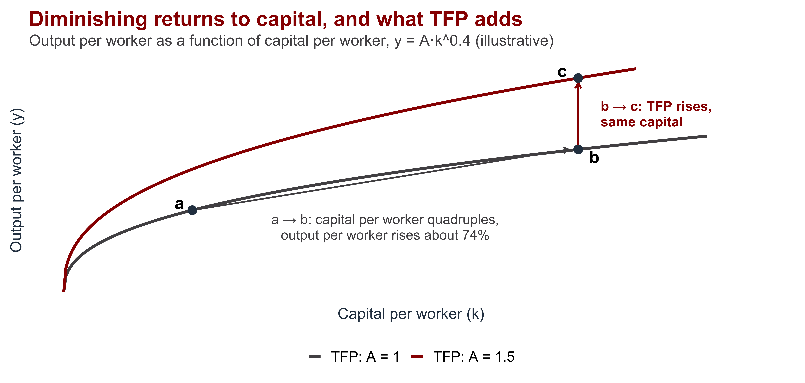
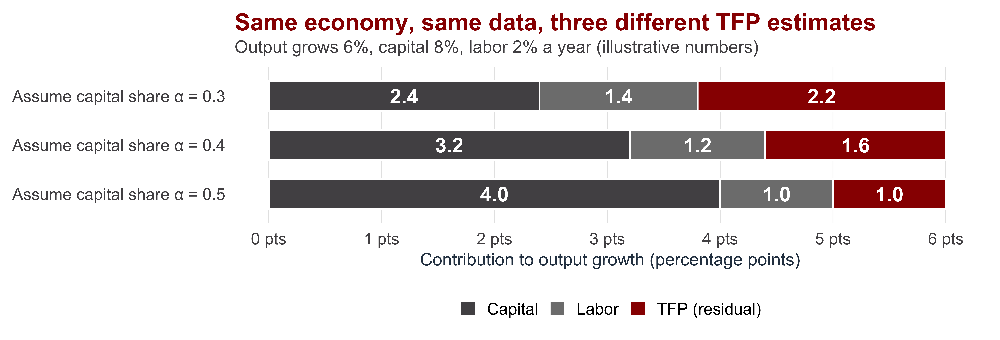
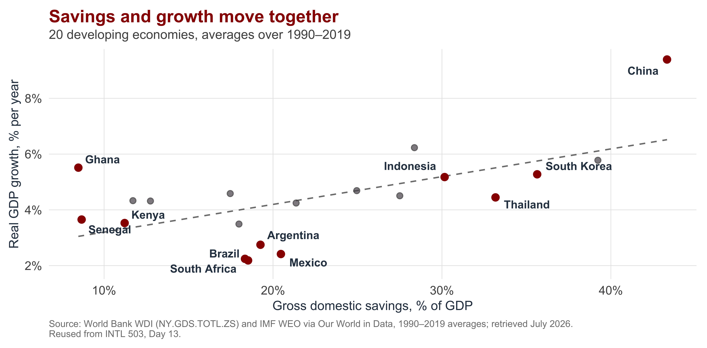
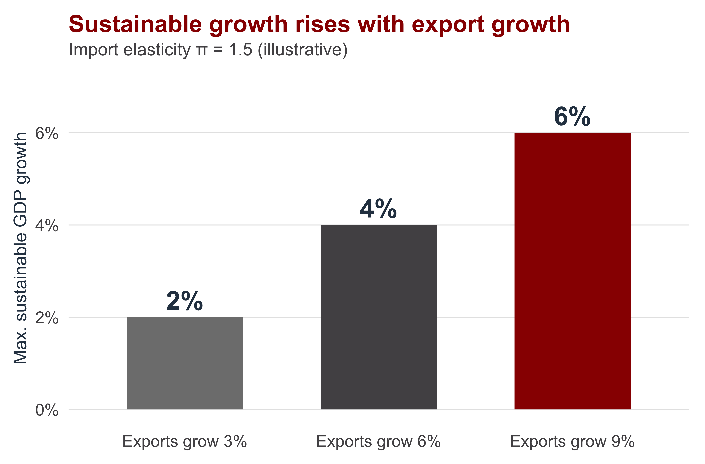
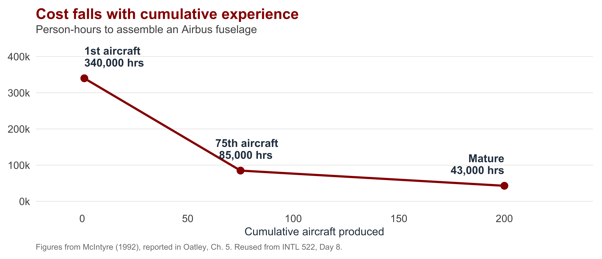

Global Development
INTL-I 522 | Day 15 — The Economics Behind Cramer, Sender & Oqubay
Prof. Sarah Bauerle Danzman
October 26, 2026
Today’s Plan
Today’s Big Question
Why do Cramer, Sender, and Oqubay argue that growth in a poor economy depends on investment, exports, and the price of food, and how much of that argument does standard macroeconomics support?
| Section | What we’ll cover |
|---|---|
| 1 · Where Growth Comes From | Define total factor productivity and explain why it matters and why it is hard to measure |
| 2 · The National Income Identity | Derive S − I = X − M and explain what it can and cannot tell us about causation |
| 3 · Three Constraints on Investment-Led Growth | Trace how finance, food prices, and foreign exchange limit an investment push |
| 4 · Why Manufacturing, and Why Intervene | Connect Day 8’s trade model to Kaldor’s growth laws and “getting prices wrong” |
| 5 · The Argument in Full | Locate each chapter of Part II in a single chain of reasoning |
Where Growth Comes From
Output depends on inputs and on how productively they are combined
An economy can grow by using more machines and more workers (this is called the “extensive margin”), or by getting more output from the machines and workers it already has (this is the “intensive margin”). Total factor productivity is the measure for how societies can get more output from the same stock of input.
Production function (Cobb–Douglas): \[Y = A \, K^{\alpha} \, L^{1-\alpha}\]
In growth rates (the growth-accounting equation): \[g_Y \;=\; \underbrace{g_A}_{\text{TFP growth}} \;+\; \underbrace{\alpha \, g_K}_{\text{capital}} \;+\; \underbrace{(1-\alpha)\, g_L}_{\text{labor}}\]
- \(Y\) output · \(K\) capital stock · \(L\) labor · \(\alpha\) capital’s share of income
- \(A\) = total factor productivity (TFP): technology, organization, skills, and the efficiency of allocation
Capital alone runs into diminishing returns
Differences in TFP account for much of the gap between rich and poor countries
| Finding | What it shows |
|---|---|
| Solow (1957); Abramovitz (1956) | Most of U.S. growth in output per worker could not be explained by more capital. Abramovitz called the residual “some sort of measure of our ignorance.” |
| Hall & Jones (1999) | Differences in output per worker across countries are driven mainly by differences in productivity, not in capital or schooling. |
| Caselli (2005) | Measured capital and human capital explain about 40% of the cross-country variance in income per worker; roughly 60% is left to TFP. |
| East Asia debate (Young 1995; Krugman 1994) | Was the “miracle” mostly accumulation (and so bound to slow), or productivity growth? Cramer et al. discuss this on p. 78. |
If TFP is most of the story, development policy should focus on whatever raises productivity. The hard question is what that is.
TFP is a residual, so its size depends on assumptions

- TFP is calculated, never observed: output growth minus measured inputs
- \(\alpha\) comes from income shares, which equal output elasticities only under perfect competition
- Capital stocks are estimated (assumed depreciation); informal output is not measured by authorities, so capital stock estimates are worse in countries with large informal sectors (most developing countries)
Cramer et al. reject TFP accounting, and this is central to the arguments they make in Part II
1 · Unsupported Assumptions. Growth accounting assumes perfect competition, full employment, constant returns, and easy substitution between capital and labor. South African coal and Korean steel were neither competitive nor constant-returns (pp. 78–79).
2 · TFP measures cannot be verified. TFP is a residual, which means it is inferred given the growth accounting model and imperfect measures of the inputs. Aggregate production functions “ask the wrong question, which they try to answer with the wrong data” and “can never be refuted empirically” (Felipe and McCombie, quoted p. 79).
3 · Technology arrives inside machines. Innovation is “embodied in the capital stock,” so separating capital accumulation from productivity growth is artificial (p. 81). On this view, raising investment is how a poor economy acquires new technology.
The National Income Identity
(Very Simple) Math!
1 · Output equals spending on it: \[Y = C + I + G + (X - M)\]
2 · National saving is income not consumed: \[S \equiv Y - C - G\]
3 · Substitute (1) into (2): \[S = I + (X - M)\]
4 · Rearrange: \[\underbrace{S - I}_{\text{net lending abroad}} \;=\; \underbrace{X - M}_{\text{current account}}\]
A country that invests more than it saves (\(I > S\)) must import more than it exports (\(M > X\)), and the gap is financed from abroad.
Equivalently: \(I = S + (M - X)\). Investment is financed by domestic saving plus foreign saving.
Many components of Y look different in developing countries
| Term | What it mostly consists of | Where Cramer et al. discuss it |
|---|---|---|
| C · Consumption | For low-paid wage workers, about 75% of income goes on food and other basic wage goods | Ch. 4, pp. 95–98 |
| I · Investment | Machinery, factories, roads, power, irrigation; much of it imported | Ch. 4, pp. 77–93 |
| G · Government | Public investment in infrastructure; in Ethiopia, 18.6% of GDP by 2011 | Ch. 4, pp. 92–93 |
| X · Exports | The country’s main source of foreign exchange (because usually sold in USD) | Ch. 5 |
| M · Imports | Capital goods and intermediate inputs; China’s imports were over 80% capital and intermediate goods, 1965–2007 | Ch. 4, pp. 102–104; ch. 5, p. 111 |
The Income Identity doesnt’ tell us what comes first
| Savings first (McKinnon–Shaw; the IPE “savings gap”) | Investment first (Keynes–Kalecki; Cramer et al.) | |
|---|---|---|
| Causal story | Households and the state save; financial markets channel the savings to investors | Investment creates incomes and profits, and saving out of those incomes follows |
| Binding constraint | A shortage of saving | A shortage of demand, and of the confidence to invest |
| Policy | Raise saving; liberalize interest rates and finance; attract foreign capital | The state leads investment (public investment, development banks, directed credit); saving catches up |
| Evidence cited | High savers grow fast (next slide) | East Asian investment rose before saving did; financial liberalization shows no link to growth (pp. 82–86) |
Both views satisfy \(S - I = X - M\) at every moment. They disagree about which variable moves first and which one adjusts.
High-saving economies have grown faster, which both views can explain

Cramer et al.’s evidence that investment can precede savings
East Asia. Investment rose from 10% of GDP (Korea) and 16% (Taiwan) in the 1950s to over 30% in the 1980s; China’s rose from 25% to over 35% by 1995–2000. Investment rose before saving did (pp. 82, 84).
Demand-led investment. Ethiopia’s public urban-housing program created a domestic cement industry; Angola’s oil-funded housing boom created building materials, brewing, and canning firms (p. 85).
Finance. No causal link between financial liberalization and growth; liberalization in Latin America was followed by crises such as Mexico’s 1994–95 “Tequila Crisis” (pp. 83–84).
Public investment crowds in private investment. A World Bank study of 26 African countries finds a positive association (p. 92).
Source: Cramer, Sender & Oqubay (2020), ch. 4, with page references as shown.
An investment push shows up in the identity as a current-account deficit
\[\uparrow I \;\;\text{with}\;\; S \;\text{slow to adjust} \;\;\Longrightarrow\;\; \downarrow (S - I) \;\;\Longrightarrow\;\; \downarrow (X - M)\]
| If the current-account deficit widens, it must be financed by… | Risk Cramer et al. identify |
|---|---|
| Aid | Volatile, follows donor fashions, comes with conditions (pp. 103–104) |
| Portfolio flows (“hot money”) | Flee unpredictably; prone to “manias and panics” (p. 103) |
| Commercial and Chinese credit lines | Debt service in foreign currency; often opaque (p. 103) |
| Exports | Reduce the deficit itself, which makes them the authors’ preferred answer |
Three Constraints on Investment-Led Growth
Cramer et al. treat growth as a sequence of constraints
| Step | Claim | Constraint it creates | Authors’ response |
|---|---|---|---|
| 1 | Growth needs a high investment ratio | Finance | Investment generates saving; public investment, development banks, directed credit |
| 2 | Investment raises employment and demand for food | Wage-goods inflation | Agricultural productivity; food price stabilization |
| 3 | Investment needs imported machinery and inputs | Foreign exchange | Rapid export growth |
| 4 | Exports must grow fast | Competitiveness | An undervalued exchange rate; use of WTO policy space |
| 5 | Support must go where returns are highest | Choosing priorities | Four criteria; unbalanced growth; linkages |
| 6 | Support must not become rent | Discipline | Reciprocal control |
This table is my summary of chs. 4–6 and 10, not the authors’.
Constraint 1: investment has to be financed before saving catches up
| Source of finance | How it works | Who bears the cost |
|---|---|---|
| Domestic saving | Retained profits, household and government saving | Consumers who defer consumption |
| Foreign saving | Aid, loans, FDI (the current-account deficit) | Future taxpayers, through debt service |
| Inflationary finance | Central bank finances the deficit; rising prices cut real wages and shift income to profits and the state | Wage workers (“forced saving”) |
| Financial repression | Directed credit at negative real interest rates | Depositors, whose savings earn less than inflation |
Kalecki: “workers spend what they get, capitalists get what they spend.” Shifting income toward profits raises saving, because profit earners save more (p. 95).
Constraint 2: rising food prices can halt an investment push
Investment rises
more jobs, more wage income
→
Food demand rises
workers spend ~75% of income on food
→
Food prices rise
if farm supply is slow to respond
→
Wages or profits squeezed
turnover, unrest, lower investment
- Kalecki’s condition: “there must be no inflationary price increase of necessities” (p. 96)
- Most of the rural poor are net food buyers, so food inflation hurts them too (p. 97)
- Ethiopian flower and textile firms lose workers as food costs rise (p. 96)
- The policy response: agricultural productivity (irrigation) and food price stabilization (pp. 97–98)
Constraint 3: export growth sets a ceiling on sustainable growth (Thirlwall’s Law)
\[g_{BP} \;=\; \frac{x}{\pi}\]
- \(g_{BP}\): growth rate consistent with balance-of-payments equilibrium
- \(x\): growth rate of exports
- \(\pi\): income elasticity of demand for imports
If \(\pi = 1.5\), each 1% of GDP growth raises imports by 1.5%.

Why Manufacturing, and Why Intervene
Day 8: the case for intervention starts from the trade model’s assumptions
| Assumption | What the free-trade case assumes | What Cramer et al. say instead |
|---|---|---|
| Market clearing | Factors are fully employed; a tariff can only destroy value | Investment is held back by low demand and uncertainty; resources sit idle (ch. 4) |
| Constant or decreasing returns | Competitive markets; no sector is special | Manufacturing has increasing returns; investment in it raises productivity across the economy (Kaldor, ch. 4) |
| Neutral terms of trade | It does not matter what a country specializes in | It matters which activities earn foreign exchange, but commodity pessimism is overstated (ch. 5) |
In ch. 3 the authors argue that “absolute advantage dominates” once these assumptions fail (p. 62).
Kaldor’s growth laws make manufacturing the source of productivity growth
1 · Manufacturing output growth drives GDP growth. The authors call this causal, not just an association (p. 100).
2 · Manufacturing output growth raises manufacturing productivity (Verdoorn’s law). More output means more specialization, learning by doing, and new embodied technology (p. 101).
3 · Manufacturing growth raises productivity in the rest of the economy, by drawing labor out of low-productivity work and supplying cheaper inputs such as pumps and fertilizer (p. 102).
In growth-accounting terms, Verdoorn’s law makes productivity growth (\(g_A\)) a result of output growth, not an independent cause of it. That is why the authors care which activities receive investment.
The learning curve is Verdoorn’s law at the level of a single firm

“Getting prices wrong”: the authors’ policy instruments are deliberate price distortions
| Price | Orthodox advice: get it right | Cramer et al.: set it deliberately | Constraint relaxed |
|---|---|---|---|
| Exchange rate | Let the market set it; avoid misalignment | Keep it competitive (undervalued) to raise the profitability of tradeables (pp. 123–128) | Foreign exchange |
| Interest rate | Positive real rates allocate saving efficiently | Directed credit, negative real rates for priority investment (p. 89) | Finance |
| Food prices | Avoid subsidies and price controls | Stabilize prices of staples; manage food imports and stocks (pp. 97–98) | Wage goods |
| Infant-industry support | Distorts comparative advantage | Support conditional on export and productivity targets (reciprocal control) | Discipline |
The phrase “getting prices wrong” is Alice Amsden’s (1989), on Korea; see Cramer et al. pp. 89, 126, 141.
A devaluation helps exports but tightens the wage-goods constraint
What a devaluation does for exports
- Raises local-currency earnings from exports
- Signals profitability in tradeables; works like a subsidy or infant-industry protection (p. 126)
- 92 episodes of manufacturing export growth were preceded by devaluations (p. 126)
What it costs
- Raises the price of imported food, fuel, and inputs
- Cuts real wages unless nominal wages rise
- Raises the burden of foreign-currency debt
- Needs a political “deal” with workers (p. 127)
Ethiopia floated the birr in July 2024; it fell from about 56 to over 150 per U.S. dollar by November 2025. The authors had warned that a real devaluation above 30% would have “dramatic and unforeseeable consequences” (p. 128).
Source: Eastleigh Voice, Nov. 27, 2025, reporting official National Bank of Ethiopia rates.
The Argument in Full
Part II of Cramer et al. as a single causal chain
Ch. 4
Raise investment; investment generates saving; target activities with increasing returns
→
Ch. 4
Keep food cheap so wages and profits can both hold
→
Chs. 4–5
Grow exports fast enough to pay for the imports investment needs
→
Ch. 5
Use the exchange rate and trade rules to make exporting profitable
→
Ch. 6
Concentrate investment where it creates pressures and linkages
- The economics: the national income identity, Kalecki’s wage-goods condition, Thirlwall’s Law, Kaldor’s growth laws
- Chs. 7–9 : whether the poor gain, through wage employment and agricultural productivity
- Ch. 10: the six policy objectives that follow from their causal story.
Where standard macroeconomics and Cramer et al. agree and disagree
| Topic | Common ground | Where Cramer et al. depart |
|---|---|---|
| National income identity | S − I = X − M holds by definition | Investment moves first; saving adjusts |
| Productivity | Long-run growth requires productivity growth | TFP accounting is uninformative; productivity growth comes from investment in particular activities |
| Trade | Exports pay for imports | Absolute, not comparative, advantage drives trade; the state should push exports |
| Prices | Prices shape where investment goes | The state should set some prices deliberately (“getting prices wrong”) |
| Finance | Investment must be financed | Financial liberalization does not raise growth; development banks and directed credit do |

INTL-I 522 | Global Development